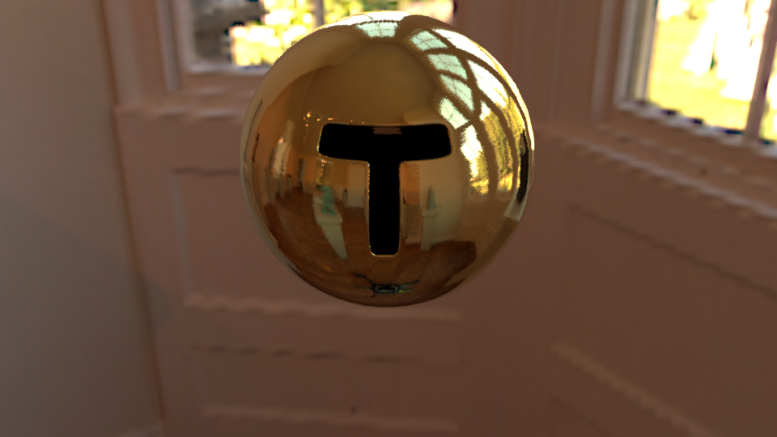
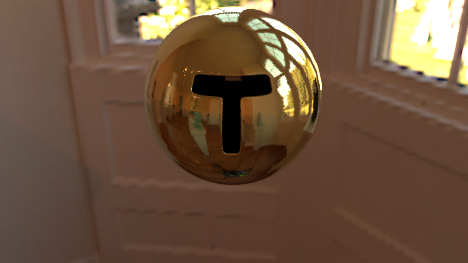

| Feature |
Standard point count |
Adjusted point count |
Use in the scene |
| Textures or Procedural images |
10 |
10 |
Textures can be used to almost any objects of my scene, and are needed to represent some objects (card game, for example) |
| Bump mapping / normal mapping |
10 |
10 |
Bump maping can add realism to the wood materials of my scene. |
| Simple extra BSDFs |
10 |
10 |
(rough) conductors can be used to render some metal objects, such as the corners of the mirror |
| (Beer-Lambert Law) |
(10) |
(0) |
(I want to implement it (for beverages in glasses), but it will not give points, since I would like to implement "homogeneous media" feature) |
| Mesh design |
10 |
10 |
I modelled almost all my meshes in Blender. |
| Image Based Lighting |
15 |
15 |
Image Based Lighting can add a lot of realism |
| Homogeneous participating media |
30 |
25 |
It is firstly to use on some liquids of my scene. But I also used it for the marble chess queen |
| Magic Mirror effect |
0 |
0 |
Used to make objects appear behind the mirror |
| Total |
85 |
80 |
Feature Description
=========
The scene used for testing is from [Benedikt Bitterli: MaterialTestBall](https://benedikt-bitterli.me/resources/). The environment map is [At the Window (Wells, UK) from Bernhard Vogl](http://dativ.at/lightprobes/). The texture used are CastleBirck and Sandstone from https://texturehaven.com/ and Wood026 from https://cc0textures.com/.
## Feature 1: Textures
### Description
!!!
"Create spatially varying BSDF parameters using texture maps. This could involve textures
from an image file or procedurally generated textures."
I chose to focus on textures from image files. The texture could be either a image which is repeated, or a texture designed specifically for an object.
I used both in my scene: the first to add texture to the table, the second to add texture to the cards, for example.
I also implemented some UV mapping useful when the UV coordinates are not given in the .obj. I implemented three UV mapping: spherical, cylindrical and planar; I added a checkerboard texture, useful for testing them.
### Design
* A new nori object had to be created: ETexture; the header describing it is *texture.h*. This header also contains the class *TextureMapping2D* and the functions to do the UV mapping (see also texture.cpp).
* The first texture implemented are the *ConstantTexture* and the *Checkerboard* in *bsdfs/constant.cpp* and *bsdfs/checkerboard.cpp*. The *Checkerboard* can take some parameters, such as the two colors, a scale and an offset.
* Then, the class *ImageTexture* in *bsdfs/image.cpp* loads an exr image. It also takes a scale parameter.
* The classes *diffuse* and *microfacet* were adapted: for diffuse, the albedo is a texture (by default constant). For microfacet, two textures can be used: one for the coefficient of diffusion $k_d$ and the other for the roughness $alpha$.
### Validation
* Here are some examples of UV mapping: the objects are mapped with the three types of UV Mapping: spherical for the sphere, cylindical for the interior object, and plannar for the ground plane.

* Here is an example of an image texture applied on a sphere: diffuse, and using microfacet.


* Then, a texture specific to an object can be applied, for example for the card player.

 
